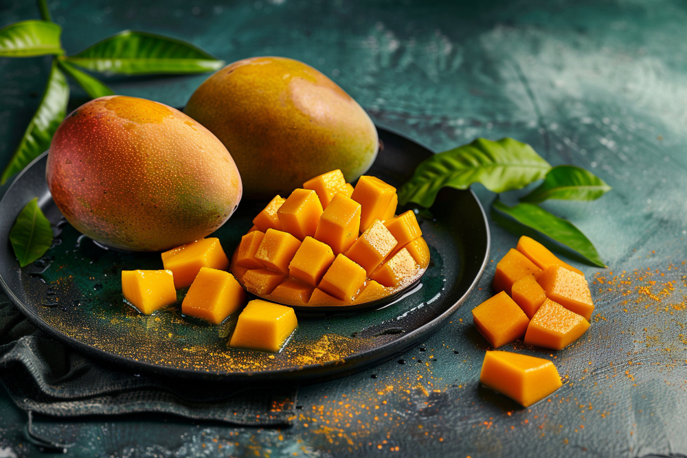

Best Quality Mangoes
Join The Organic Movement!
Best Quality Mangoes
Join The Organic Movement!
Indulge in the pure, natural taste of our premium organic mangoes. Grown without the use of harmful pesticides and chemicals, our mangoes are not only delicious but also packed with nutrients. By choosing our organic mangoes, you’re supporting sustainable farming practices that protect the environment and promote biodiversity. Experience the rich, authentic flavor of nature’s finest fruit, and take a step towards a healthier, greener future. Savor the difference with every bite and be a part of the organic revolution!
Shop Now